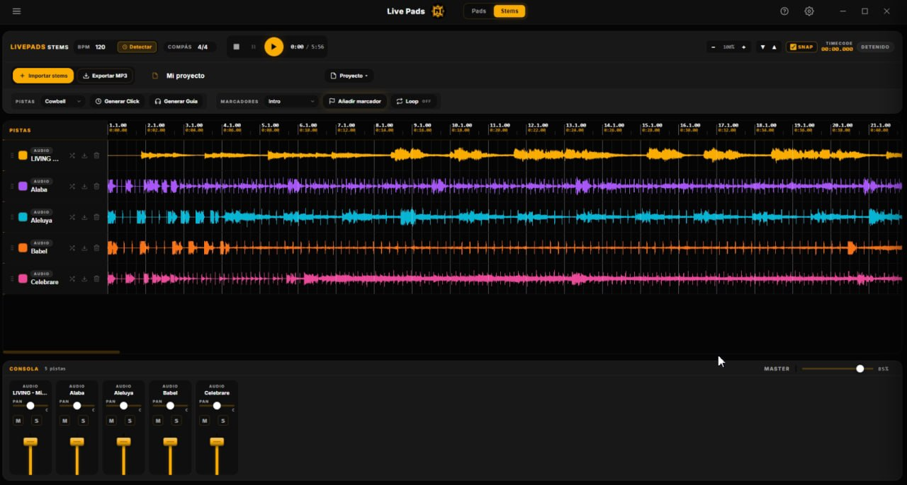

La cabina del director de alabanza, en una sola pantalla.
Pads ambientales continuos, metrónomo sample-accurate, drums
MIDI-mapeables, setlist con letras y acordes, y un nuevo
editor de stems con separación por IA (voz · batería ·
bajo · otros) 100% local. Sin ratón, sin latencia, sin silencios entre
canciones.
Características
Todo lo que necesita un servicio en vivo
Cada control está pensado para uso con teclado o MIDI — la cabina
no necesita ratón. Cero latencia entre canciones, transiciones
cruzadas suaves, y un editor de letras con acordes que se
transpone con dos clicks.
Editor de Stems con IA Nuevo
Separa cualquier canción en voz · batería · bajo · otros con un clic — 100% local, sin nube ni Python. Usa la GPU si está disponible (con fallback a CPU), guarda los stems en MP3 y los mezclas en una línea de tiempo multipista.
Click inteligente
Detecta BPM y compás (4/4, 6/8…) y genera un metrónomo que se alinea solo al pulso real — incluso si la música empieza tras un intro en silencio. Elige el patrón de acentos antes de generarlo (qué tiempos suenan fuertes) y 7 sonidos de click.
Detección de secciones Nuevo
Sube la canción y, con un clic, la app analiza su estructura (intro · verso · coro · puente) y coloca los marcadores de la guía solos. Tú renombras y ajustas — o los pones a mano si prefieres. La guía hablada se genera al instante.
Mezclador centralizado Nuevo
Todos los volúmenes y paneos (Pads · Batería · Click · Pista · Maestro) en un solo panel, fáciles de mapear a los faders y perillas de tu controlador MIDI. La configuración de paneo y niveles se guarda entre sesiones.
De la mezcla a tu setlist Nuevo
Arma tu multitrack en el editor de Stems y asigna la mezcla final directo al slot de Secuencia de cualquier canción — sin exportar y reimportar a mano. Un panel lateral dentro de Stems te muestra todo el setlist y, con clic derecho, le cargas la secuencia o el audio original a cada canción (archivo o YouTube).
Pads ambientales continuos
3 bancos × 12 notas, crossfade automático de 2s entre tonos. Sin huecos cuando cambias de canción a media intro.
Metrónomo con subdivisiones Nuevo
Herramienta flotante, movible y redimensionable en Pads y Stems. Subdivisiones (corcheas, tresillos, semicorcheas…), acentos y silencios por tiempo en un disco radial clickable, nombre de tempo (Allegro, Andante…), tap tempo, BPM tipeable y 7 sonidos. Scheduler sample-accurate (Chris Wilson).
Drum pads + kits custom
8 pads MIDI-mapeables, edición inline de nombres, asignación de samples MP3 desde disco. Crea tus propios kits sin salir de la app.
Setlist con sync en la nube
Importa, exporta y sincroniza con tu base remota. Búsqueda global (título, artista, letra), filtros por tono ("tono:G") y etiquetas ("tag:navidad"), favoritos, drag & drop y auto-avance que encadena el servicio.
Carátulas automáticas Nuevo
Cuando agregas el audio original de una canción desde YouTube, Live Pads toma la carátula del video automáticamente. Tu setlist se ve como tu app de música favorita: portada, título, artista y tono de un vistazo, con un diseño de tarjeta renovado.
Actualizaciones automáticas
La app se mantiene al día sola: descarga las nuevas versiones en segundo plano y se actualiza con un clic. Siempre tienes lo último sin reinstalar nada.
Letras con acordes Nuevo
Editor con auto-save, importación desde LaCuerda.net, secciones [VERSO] [CORO] con estilo del theme, y un modo pantalla completa tipo teleprompter: letra centrada legible a distancia, A+/A−, tonalidad y BPM a la vista y transposición de acordes en vivo (±semitonos, sin tocar la canción guardada).
MIDI & teclado mapeables
Asigna cualquier control con modo Learn (CC para faders/perillas). Mapeos independientes para Pads y Stems, con uno único por función, y exporta/importa tu setup para respaldarlo o llevarlo a otra PC.
Spotlight Ctrl+K
Búsqueda global instantánea entre canciones y comandos. Fuzzy matching, navegación con flechas, Enter ejecuta. Como Linear o Notion.
Companion móvil (PWA)
La banda en escena ve letras y acordes en su teléfono desde la misma WiFi. Cero apps que instalar — escaneas el QR y listo. Más abajo →
8 temas premium Nuevo
GI.Setlist, Midnight Aurora, Crimson Power, Clean Worship, Deep Sea, Ambient Purple, y los nuevos Linear (violeta técnico) y Code (verde lima). Cambio instantáneo, persistencia, preview on hover.
Interfaz unificada + Ajustes centralizados Nuevo
Rediseño completo con un lenguaje visual consistente en toda la app (esquinas precisas, foco sutil, densidad). Un único panel de Ajustes con navegación lateral reúne audio, MIDI, temas, servicio, cuenta y atajos — todo en un solo lugar, ordenado.
Tour visual
Pensada para el directo
01
Now Playing siempre visible
Un banner encima del setlist muestra qué canción está sonando con el título en grande. Click → te lleva a la card en la librería. Para que sepas dónde estás sin escanear 80 entradas.
Tab "prepara" la siguiente canción sin reproducir
Canciones ya pasadas dimmean al 45%
Indicador "3 / 8 · ~32 min" del progreso del set
PresetsLibreríaServicio
Sonando
Tan Sólo Tú
Marco Barrientos · BPM 72 · Tono Cm
3 / 8 · ~32 min restantes
1CelebramosA
2Bueno EsG
3Tan Sólo TúCm
4Espíritu SantoD
5Aclamamos Tu NombreF
6Eres Mi RefugioEm
02
Editor de letras con acordes
Auto-save cada 1.5s. Importa directamente desde LaCuerda.net con un click. Transpón ±12 semitonos respetando tu notación (sostenidos o bemoles). Pre-vista formateada con secciones [VERSO 1], [CORO], [PUENTE].
Ctrl+S guarda y cierra
Ctrl+[ envuelve selección en corchetes
Vista previa instantánea con toggle
Editor de letras
Tono CmGuardado ✓
[VERSO 1]
[Cm] [Ab]
Tan sólo tú llenas mi ser
[Eb] [Bb]
Eres todo lo que necesito
[CORO]
[Ab] [Eb] [Bb] [Cm]
Yo te alabaré, mi corazón
[Ab] [Eb] [Bb]
Se rinde a ti…
03
MIDI & teclado mapeable
Modo Learn: clic en cualquier control, toca una tecla o pad MIDI, listo. La vista "Mapeos activos" muestra todos los enlaces actuales (TECLADO vs MIDI) con un × para borrar individualmente. Sin abrir DevTools.
CC support para sliders de volumen / pan
Fallback automático: nota MIDI 60-71 → pads C-B
El nombre del controlador conectado aparece en topbar
Mapeos activos🟢 Akai MPK Mini
TodosTecladoMIDI
Play / Stop maestroTECLADOEspacio×
PánicoTECLADOEsc×
Pad CMIDINota 60×
Pad GMIDINota 67×
Volumen masterMIDICC 7×
Drum 1 (Kick)TECLADOQ×
04
Pre-vuelo antes del servicio
Antes de empezar, abre el checklist desde el menú. 6 verificaciones: salida de audio activa, banco de pads cargado, kit de drums OK, MIDI mapeado, lista de canciones populada, metadatos BPM y tono completos.
Verde ✓ o ámbar ⚠ por fila
Resumen final: "Todo listo" o "N por revisar"
Detalles inline de qué falta
PRE-VUELO
Antes de empezar el servicio:
✓
Salida de audioAudioContext activo
✓
Banco de pads cargadoActual: Foundations
✓
Kit de batería cargadoActual: Modern (8 pads)
✓
MIDI mapeado12 controles asignados
✓
Lista de servicio8 canciones cargadas
⚠
Metadata completaFaltan datos en 1: Espíritu Santo
1 cosa por revisar antes de comenzar.
05
Editor de Stems con IA Nuevo
Importa una canción y, con un clic, sepárala en voz · batería · bajo · otros — 100% local, sin nube ni Python. Mézclalas en una línea de tiempo multipista con waveforms a color, paneo y volumen por pista, y un click inteligente que se alinea solo al pulso real de la canción. Cuando termines, asigna la mezcla directo a una canción de tu setlist.
Separación con GPU (DirectML) y fallback automático a CPU
Detección de BPM y compás, marcadores y guía de secciones
Panel de setlist integrado: asigna la mezcla a una canción con un clic
Exporta la mezcla o cada stem a MP3

Companion móvil
Letras + acordes en el teléfono de tu banda
Activa el Companion desde el menú, escanea el QR con la cámara
del teléfono, y la banda en escena ve la canción que disparas
en la cabina — con secciones, acordes alineados, y un toggle
para ver sólo letra.
Misma WiFi, sin nube.
La cabina abre un servidor local en el puerto 3001. Funciona sin internet —
ideal si tu local no tiene WiFi estable para datos.
Modo iglesia (Hotspot).
¿Sin red en el local? La laptop emite su propia WiFi y los teléfonos
solo escanean — 100% offline. Un botón abre el permiso del Firewall de
Windows de una vez, sin tocar la consola.
Sin app que instalar.
Es una PWA: abre la URL en cualquier navegador del teléfono.
"Añadir a la pantalla de inicio" la deja como app nativa.
Pensado para el escenario.
Tamaño de letra ajustable, auto-scroll opcional, pantalla
siempre encendida (wake-lock), toggle "Ocultar acordes" para vocalistas.
En vivo.
Un punto verde pulsa cuando la cabina está reproduciendo audio.
La banda sabe que el sistema está activo sin tener que mirar atrás.
LAN onlySin authPWA installableWebSocket en tiempo real
LivePads Companion
Ocultar acordesConectado
A
Celebramos
Marco Barrientos
BPM 137
VERSO 1
A
Damos gloria al Padre
D
Cantamos gloria al Hijo
F#m A/C# D
Gloria al Santo Espíritu de Dios
CORO
A
Cantamos Santo
1 Activa Companion en la cabina 2 Escanea con la cámara del teléfono
Para quién está hecho
Diseñado por y para el equipo de cabina
🎤
Directores de alabanza
Controla pads, BPM, tono y crossfades sin distraer al equipo. La pantalla del director es la cabina, no un papel impreso.
Atajos de un sólo tecla para cada pad
Setlist visible mientras tocas
Transposición en vivo si cambia el tono
🎹
Músicos
Letra con acordes en pantalla grande, transpuesta a tu tono, formateada con secciones claras. Sin papeles que se traspapelan.
Importación rápida desde LaCuerda
Acordes Toggle on/off por canción
BPM y tono visible siempre
🎛️
Técnicos de cabina
Mapea cualquier control MIDI desde tu controlador físico. Faders para volumen, pads para drums, knobs para filtros. Una sola fuente de verdad.
Modo Learn intuitivo
Soporte CC para sliders
Mapeos exportables / portables
Power-user
Sin tocar el ratón
Cada milisegundo cuenta en directo. Estos atajos cubren el 90% del flujo
del servicio sin levantar las manos del teclado.
Ctrl + K
Spotlight global
Busca cualquier canción o comando. Fuzzy matching estilo Linear, navegación con flechas, Enter ejecuta.
Espacio
Play / Stop maestro
Pad + track + metrónomo en un solo botón.
Tab
Preparar siguiente
Stagea la siguiente canción sin reproducir.
1 — =
Tocar pad C—B
Fila superior dispara los 12 pads cromáticos.
Q W E R A S D F
Disparar drums
8 pads del kit activo, hit-and-fade.
↑ ↓ ← →
Navegar servicio
Avanza o retrocede en el setlist en vivo.
Ctrl + N
Nueva canción
Inline edit form se abre instantáneamente.
Esc
Pánico
Detiene todo y cierra cualquier modal.
?
Ayuda
Lista completa de atajos en el sidebar.
Preguntas frecuentes
Lo que suelen preguntar
¿En qué sistemas operativos funciona?
Por ahora solo Windows (instalador NSIS de 250 MB). Está construido en Electron, así que un build para macOS y Linux es trivial — pídelo cuando lo necesites.
¿Necesito internet?
No. La app funciona 100% offline. Solo necesitas internet si quieres sincronizar el setlist con tu base remota de MongoDB (opcional, configurable en %APPDATA%\LivePads\config.json).
¿Funciona con cualquier controlador MIDI?
Sí. Usa el modo "MIDI Learn": click en cualquier control de la app, toca tu pad / tecla / knob, listo. Soporta NoteOn, CC y mappings de teclado para los que prefieren tocar todo desde el portátil.
¿De dónde salen las letras y acordes?
Tres opciones: (1) escribirlas a mano en el editor con auto-save, (2) importar desde una URL de LaCuerda.net con un click, (3) sincronizar con tu base de MongoDB si ya las tienes ahí.
¿Cómo persiste mi configuración entre arranques?
Todo se guarda en %APPDATA%\LivePads\: librería de canciones, kits personalizados, mapeos MIDI/teclado, preferencias de tema, último banco de pads usado.
¿Listo para tu próximo servicio?
Pruébalo en el navegador sin instalar nada, o descarga la versión completa. Tu librería existente (si tienes una) se importa directo desde un .json.